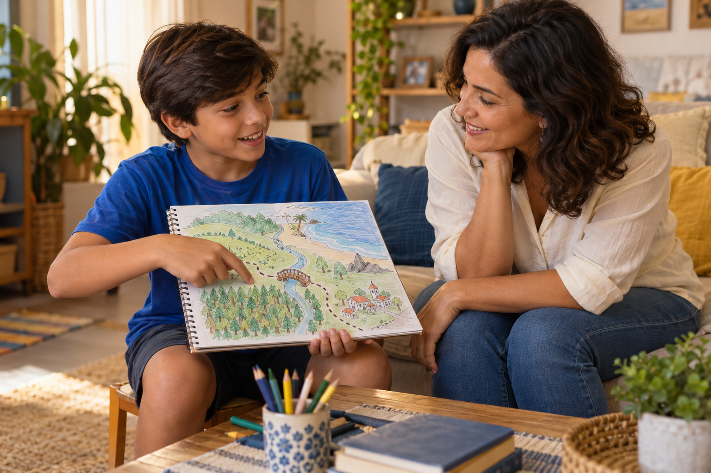
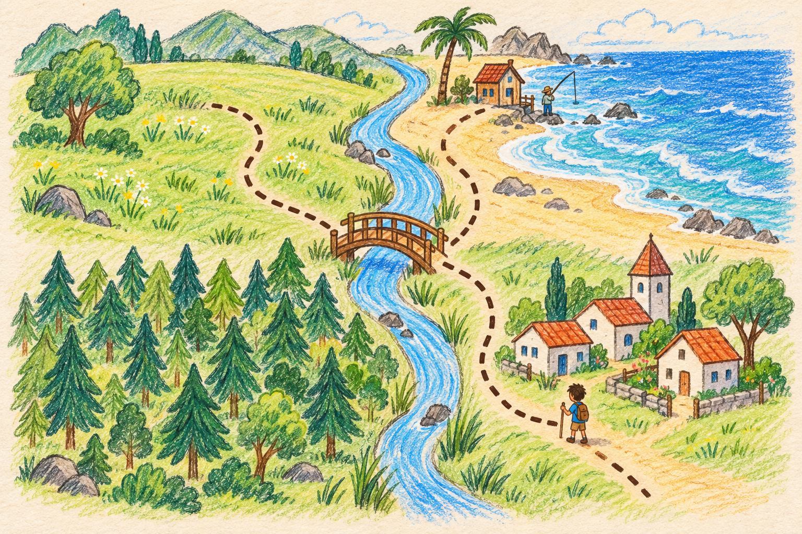
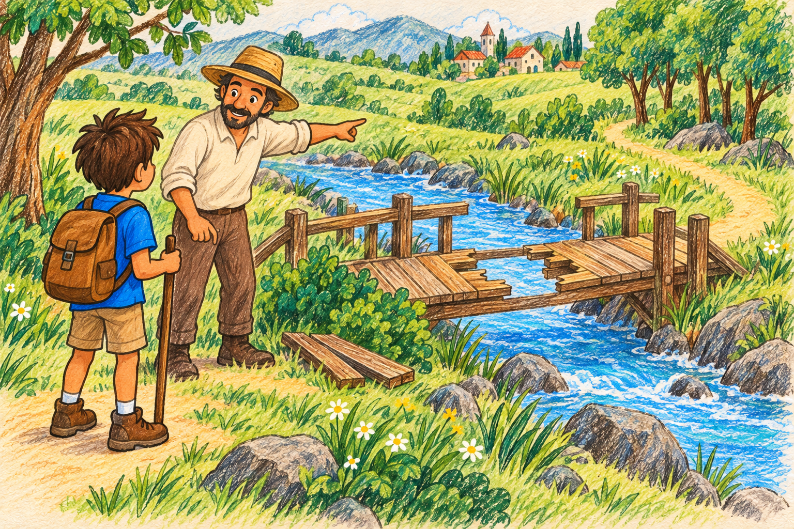
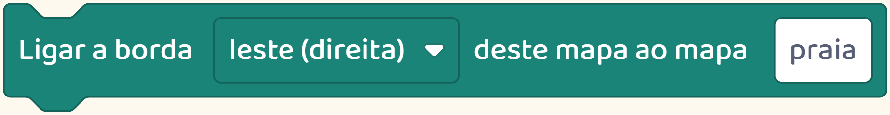
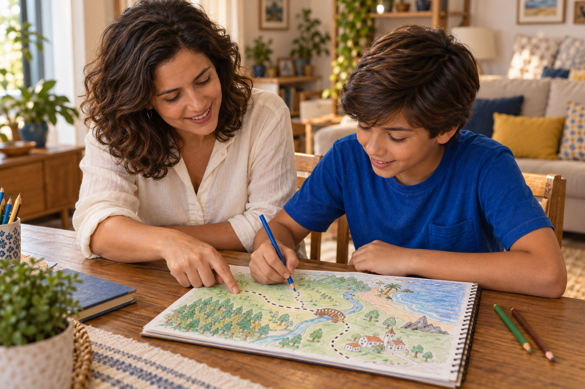

Por trás do jogo
A história que seu filho inventou pode virar um jogo.
E você pode participar da aventura.

A história que seu filho inventou pode virar um jogo.
E você pode participar da aventura.

Se ele gosta de inventar personagens e lugares, convide ele a contar como seria explorar esse mundo.

Onde a aventura começa? O que o jogador precisa fazer?
Uma história vira parte do jogo quando a pessoa pode agir nela.

Ela escolhe um caminho, conversa com um personagem ou procura algo que falta.
Veja este reino da nossa plataforma.
O herói pode sair do campo e chegar à praia. Os lugares estão ligados para formar a aventura.
Quem cria precisa decidir essas ligações.

Ao chegar ao fim deste caminho, o jogador vai para onde?
Na praia, um pescador conta que o reino continua para o sul.
A fala do personagem ajuda o jogador a escolher o próximo caminho.
Criar esse tipo de jogo une a história que a criança imagina às ações de quem joga.

Siga o perfil para conhecer mais possibilidades.